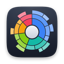
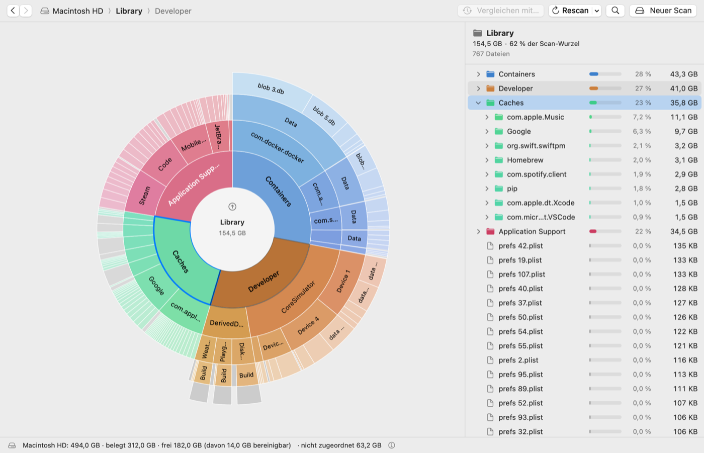
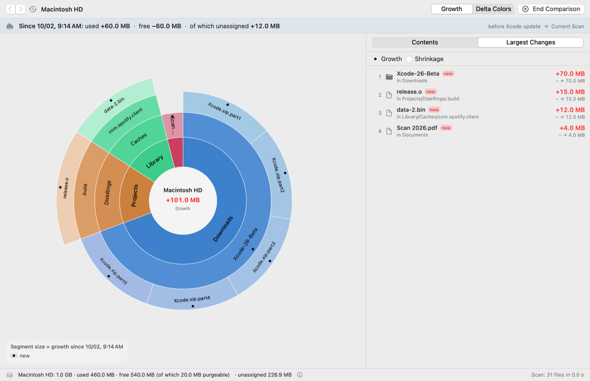
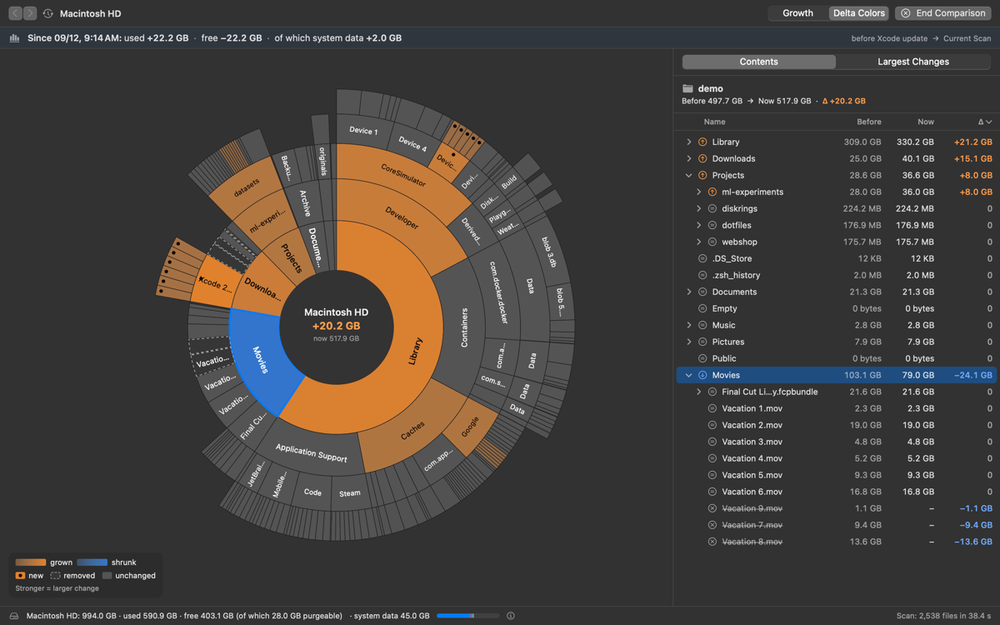
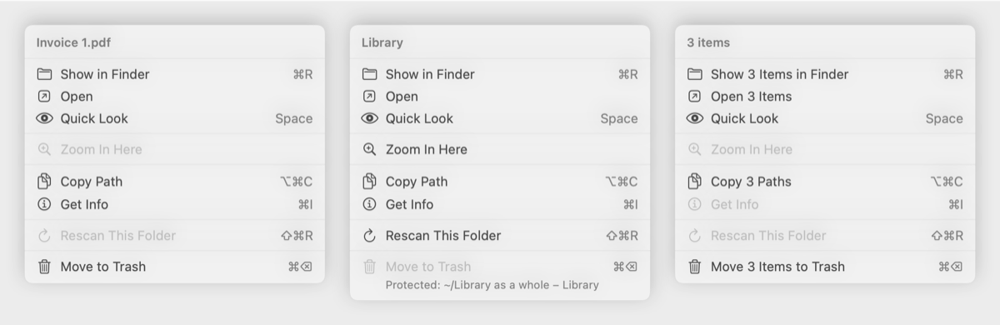

Compare scans over time
The growth view sizes each segment by how much it grew since the snapshot, and ranks the largest changes. Perfect after an update, a big download or a busy week.

DiskRingsFree, open-source disk space analyzer for macOS with an interactive sunburst chart. See what fills your Mac, find out where your storage went, and free up space safely.

Every ring is a folder level. Click to zoom, swipe to go back, and the list follows along.
Save snapshots and compare them later to see what grew, shrank, appeared or vanished.
APFS snapshots, purgeable space and system data get their own segment, so the totals add up.
Items only go to the Trash, after a confirmation, with ⌘Z undo. System locations are protected.
2.9 million files in about 10 seconds. Hard links counted once, sparse and compressed files with their real size.
No network access, no telemetry, no account. Free and open source under the MIT License.
English, Deutsch, Français, Español, Italiano, Português (Brasil), Nederlands, Polski, Русский, 日本語, 简体中文, 한국어, Türkçe and Svenska. Follows your system language automatically.
The growth view sizes each segment by how much it grew since the snapshot, and ranks the largest changes. Perfect after an update, a big download or a busy week.

Keep the familiar layout and see change at a glance: growth in red, shrinkage in green, new items marked, removed items dashed.

Show in Finder, Quick Look, copy the path, rescan a folder or move it to the Trash, from the chart, the list or the menu bar.

~/Library/Mail can be measured too.Prefer to build it yourself? The README explains how. A Homebrew cask is planned.